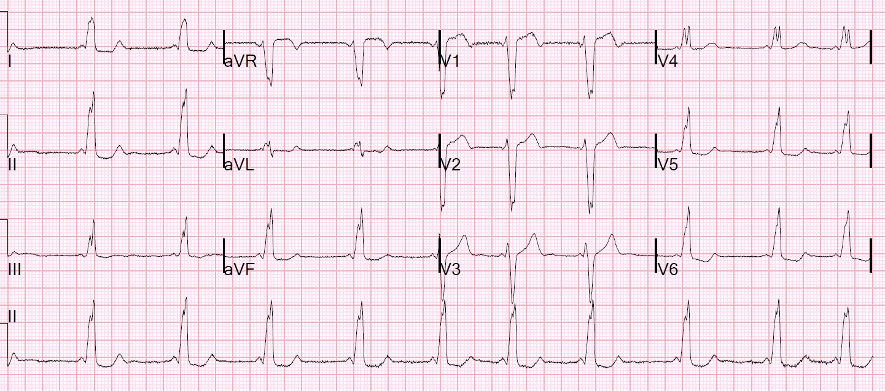
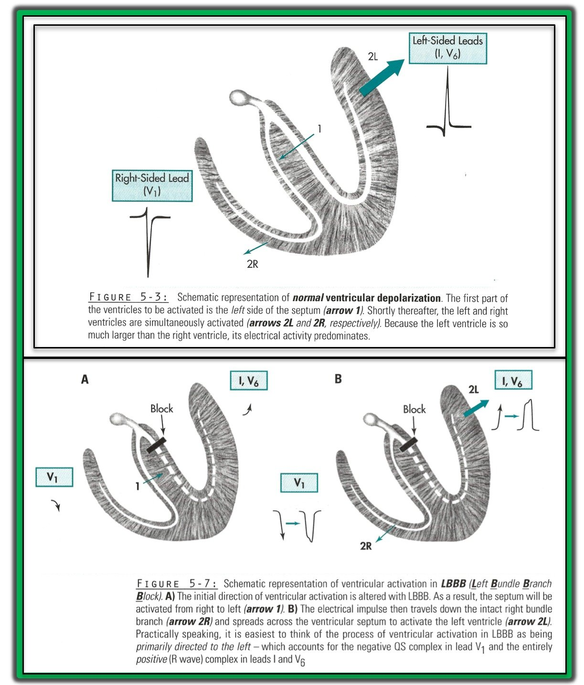
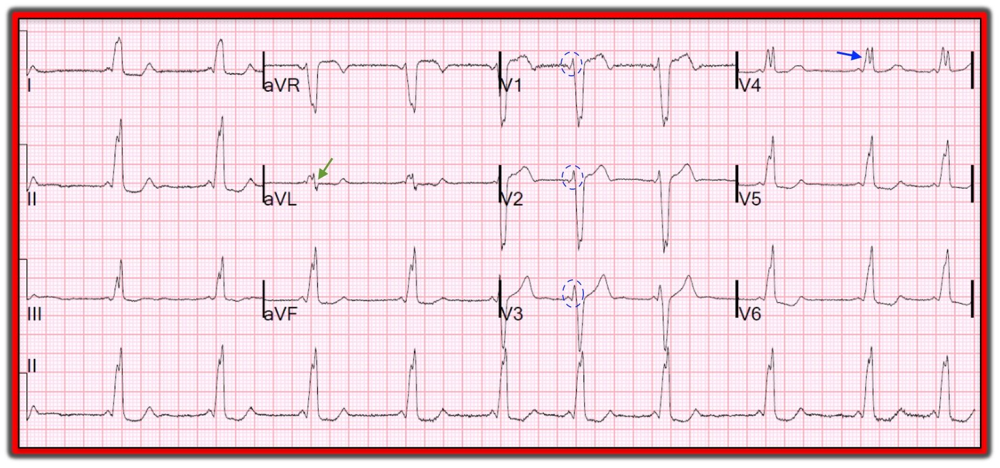

30/04/2019 — Bạn nghĩ gì về blốc nhánh trái này?
Bản dịch tiếng Việt của bài "What do you think about this Left Bundle Branch Block?" – Dr. Smith’s ECG Blog. Giữ nguyên toàn bộ 5 hình ảnh của bản gốc.
Tôi đang đọc qua một chồng điện tâm đồ và thấy bản ghi này:


Bạn nghĩ sao?
Máy tính gặp nhiều khó khăn với những bản ghi kiểu này. Đây là WPW. Lưu ý khoảng PR rất ngắn. Đoạn đi lên của QRS bị chậm lại (sóng delta). Bản ghi trông giống LBBB vì đường phụ nằm ở phía bên phải của tim, nên tim phải được tiền kích thích trước rồi khử cực tim trái từ phải sang trái, y như trong LBBB. Mọi bất thường tái cực đều do bất thường khử cực của WPW gây ra.
Tôi đã tra hồ sơ bệnh án để tìm thêm thông tin: hóa ra bệnh nhân này đã được chẩn đoán WPW từ trước và chưa bao giờ được triệt đốt. Trước đây anh ấy đã có các cơn nhịp nhanh, vì vậy anh ấy có WPW lâm sàng.
Không phải mọi WPW đều biểu hiện trên điện tâm đồ. Khi không biểu hiện, đôi khi nó được gọi là “dẫn truyền ẩn” (concealed conduction). Xem ca này: Wide Complex Tachycardia
Không phải mọi bệnh nhân có WPW biểu hiện trên điện tâm đồ đều có WPW lâm sàng.
Bệnh nhân này có cả hai.
Chẩn đoán: WPW

===================================
Bình luận của KEN GRAUER, MD (30/4/2019):
===================================
Như Dr. Smith đã nêu — Chúng ta có thể nhanh chóng nhận ra rằng điện tâm đồ này (được tìm thấy “trong một chồng bản ghi” cần đọc lại) không phải là một ví dụ về LBBB — vì khoảng PR cực kỳ ngắn! Thay vào đó, bệnh nhân này có WPW (Wolff-Parkinson-White) trên điện tâm đồ. Điều này đặt ra một loạt vấn đề liên quan đến thực thể WPW:
Biểu hiện trên điện tâm đồ của WPW:
Ngoài khoảng PR ngắn, còn có 2 đặc điểm khác đặc trưng cho WPW: i) Sóng delta (thường có mặt ở ít nhất vài chuyển đạo); và, ii) QRS giãn rộng.
- Lý do của khoảng PR ngắn là sự dẫn truyền từ tâm nhĩ xuống tâm thất nhanh hơn nhiều khi đi qua AP (Accessory Pathway – đường phụ), so với sự dẫn truyền xung động tương đối chậm qua đường nút AV bình thường.
- Sau khi tới tâm thất — dẫn truyền khi đó chậm lại, vì xung động đi qua các sợi cơ tim không chuyên biệt. Chính sự dẫn truyền chậm này tạo ra sự trát đậm ở phần đầu của QRS, tức là sóng delta. Cuối cùng, xung động nối vào phần tận cùng của hệ thống dẫn truyền khi phần cuối của QRS được tạo ra.
- Ở WPW, Phức bộ QRS bị giãn rộng do sự hợp nhất giữa phần trát đậm ở đầu QRS (sóng delta) với phần cuối của quá trình khử cực thất.
Cần hiểu rằng bệnh nhân WPW có thể dẫn truyền theo bất kỳ cách nào sau đây:
- Hoàn toàn qua AP — khi đó cả 3 đặc điểm (khoảng PR ngắn; sóng delta; QRS giãn rộng) đều sẽ thấy được trên điện tâm đồ.
- Hoàn toàn qua đường nút AV bình thường — khi đó khoảng PR bình thường, và phức bộ QRS không giãn rộng.
- Một phần qua AP, và một phần qua đường nút AV bình thường — khi đó, tùy theo mức độ tương đối của tiền kích thích — khoảng PR có thể chỉ ngắn lại chút ít (hoặc nhiều hơn thế) — và phức bộ QRS chỉ giãn rộng chút ít (hoặc nhiều hơn thế). Điều này giải thích vì sao đôi khi có thể cực kỳ khó nhận ra WPW ở một bệnh nhân chỉ biểu hiện tiền kích thích một phần.
- Mức độ tương đối của tiền kích thích có thể thay đổi từ lần này sang lần khác — đến mức điện tâm đồ của một bệnh nhân có thể trông hoàn toàn bình thường vào một ngày — và có thể biểu hiện WPW kinh điển vào một ngày khác.
- Một số bệnh nhân có thể chỉ dẫn truyền qua AP theo kiểu ngược dòng. Kết quả là, điện tâm đồ khi nhịp xoang sẽ trông bình thường — NHƯNG — vì có một AP có khả năng dẫn truyền ngược dòng — nên đã có sẵn một “đường vào lại” — và bệnh nhân có thể dễ bị phát triển nhịp SVT vào lại được gọi là AVRT (nhịp nhanh vào lại nhĩ thất – AtrioVentricular Reentrant Tachycardia). Nếu AP ở bệnh nhân như vậy không bao giờ dẫn truyền xuôi dòng (tức là, theo hướng đi tới) — thì đây được gọi là AP “ẩn” (occult).
- Chính sự hiện diện của một (và đôi khi nhiều hơn một) AP — và, khả năng của AP dẫn truyền nhanh hoặc xuôi dòng (đi tới) xuống tâm thất hoặc ngược dòng (đi lùi) lên tâm nhĩ hoặc cả hai — là điều tạo thuận lợi cho sự xuất hiện một số rối loạn nhịp nhanh. Ví dụ, dẫn truyền xuôi dòng nhanh quá mức tạo thuận lợi cho AFib với tần số có thể đạt ≥220-250/phút (BẤM VÀO ĐÂY để Ôn tập các rối loạn nhịp liên quan đến WPW).
=================
Chẩn đoán LBBB trên điện tâm đồ:
Hình ảnh điện tâm đồ “điển hình” của LBBB gồm các đặc điểm sau:
- QRS giãn rộng tới ít nhất 0.12 giây.
- Phức bộ QRS dương hoàn toàn (một pha) ở các chuyển đạo bên trái I và V6 (có thể có hoặc không có khía ).
- Phức bộ QRS âm là chủ yếu ở chuyển đạo bên phải V1. Có thể có (hoặc không có) một sóng r ban đầu nhỏ và hẹp ở chuyển đạo V1 (tức là, chuyển đạo V1 có thể cho thấy phức bộ QS hoặc rS).
LƯU Ý: Sự hiện diện của “các tình trạng khác” (tức là, nhồi máu, phì đại nặng, bệnh cơ tim, v.v.) có thể làm thay đổi hình ảnh điện tâm đồ của bệnh nhân LBBB — nhưng các đặc điểm nêu trên là những gì cần phải thấy nếu là LBBB không biến chứng.
- Để minh họa — tôi trình bày cách hình thành các dạng sóng tạo nên hình ảnh điện tâm đồ của LBBB “điển hình” ở Hình 1:


=================
Tại sao Điện tâm đồ trong ca này Không phải là LBBB:
Khi lần đầu nhìn điện tâm đồ trong ca này — ban đầu tôi đã nghĩ đây là LBBB. Nhưng, ngoài khoảng PR ngắn — các đặc điểm sau rõ ràng là không điển hình cho LBBB (Hình 2):
- Chuyển đạo aVL thường trông giống các chuyển đạo bên trái I và V6 (tức là, với sóng R một pha = dương hoàn toàn). Mũi tên MÀU XANH LÁ ở Hình 2 cho thấy một hình thái QRS hết sức bất thường ở chuyển đạo aVL, với một sóng s tận, phân mảnh, hoàn toàn không đặc trưng.
- Các chuyển đạo V1, V2 và V3 đều phải có QRS âm là chủ yếu trong LBBB điển hình, với không quá một sóng r ban đầu rất nhỏ và mảnh (nếu có sóng r nào). Thay vào đó, cả 3 chuyển đạo này đều biểu hiện một sóng R ban đầu rộng đến bất ngờ (bên trong hình bầu dục chấm chấm MÀU XANH DƯƠNG).
- Chuyển đạo V4 trong LBBB điển hình thường trông giống các chuyển đạo V1-V3 (tức là, âm là chủ yếu). Khi có LBBB điển hình, nó thường không dương hoàn toàn và có khía như chúng ta thấy ở Hình 2.
- ĐIỀU CỐT LÕI: Phần trát đậm ban đầu (tức là, đoạn dốc lên chậm) của các phức bộ QRS dương hoàn toàn ở Hình 2 chính là sóng delta, thấy được ở nhiều chuyển đạo. Các sóng lệch dương ban đầu rộng hơn dự kiến (sóng r) ở các chuyển đạo V1, V2 và V3 cũng là sóng delta!


=================
AI mắc WPW nên được triệt đốt?
Bệnh nhân trong ca này dường như đã được biết có WPW trên điện tâm đồ, cũng như có tiền sử rối loạn nhịp — nhưng chưa bao giờ được triệt đốt. Điều này đặt ra câu hỏi AI mắc WPW nên được triệt đốt? Theo ý kiến của tôi — câu trả lời là còn tùy! Rõ ràng, nếu bệnh nhân được chuyển tới một bác sĩ tim mạch điện sinh lý (EP) — khả năng triệt đốt được khuyến nghị sẽ cao hơn nhiều. Và, trong tay một bác sĩ điện sinh lý giỏi, có kinh nghiệm thực hiện số lượng ca lớn — khả năng “chữa khỏi” các rối loạn nhịp liên quan đến WPW là cao, và nguy cơ biến chứng của thủ thuật xâm lấn này thường rất thấp. Dù vậy, nguy cơ biến chứng vẫn tồn tại — và với bệnh nhân lớn tuổi có WPW phát hiện tình cờ (hoặc có các rối loạn nhịp ít xảy ra và được kiểm soát thỏa đáng bằng thuốc) — “cán cân” chưa chắc đã nghiêng về phía can thiệp. Các yếu tố tiền sử cần cân nhắc khi xem xét có nên đề xuất điều trị triệt đốt hay không bao gồm:
- Bệnh nhân này bao nhiêu tuổi? (không hề được nêu trong bệnh sử ở đây …).
- Bệnh nhân bắt đầu có triệu chứng ở tuổi nào? (Nguy cơ xuất hiện rối loạn nhịp ác tính thấp hơn đáng kể ở những bệnh nhân chỉ bắt đầu có triệu chứng sau 35-40 tuổi).
- Các cơn có triệu chứng xảy ra thường xuyên đến mức nào? Triệu chứng nặng đến đâu? Thuốc chống loạn nhịp có kiểm soát được các cơn không?
- Quan trọng — Bản thân bệnh nhân muốn làm gì?
- BẤM VÀO ĐÂY — Để có thêm thông tin cụ thể về việc nên chuyển những bệnh nhân nào.
Cách xác định vị trí AP từ điện tâm đồ:
Thăm dò điện sinh lý (EP) sẽ xác định được vị trí AP. Dù vậy, việc thử xác định vị trí AP dựa vào hình ảnh sóng delta trên điện tâm đồ cũng rất thú vị (và có thể mang lại một số hiểu biết lâm sàng ban đầu quan trọng). Sau khi nghiên cứu nhiều thuật toán đã được đề xuất cho việc này — tôi đã tổng hợp dữ liệu tìm được thành một cách tiếp cận dễ sử dụng — BẤM VÀO ĐÂY để xem đầy đủ chi tiết & tài liệu tham khảo. Áp dụng hệ thống mà tôi mô tả ở link này cho kết quả như sau:
- Vì phức bộ QRS không dương hoàn toàn ở chuyển đạo V1 — Bắt đầu với Bước B-1: Vì QRS âm là chủ yếu ở chuyển đạo V1 và vùng chuyển tiếp xảy ra sau chuyển đạo V2 — nên đây là một AP BÊN PHẢI.
- Chuyển sang Bước B-2: Vùng chuyển tiếp ở Hình 2 xảy ra giữa chuyển đạo V3 và V4 — điều này đưa chúng ta tới Bước B-4.
- Bước B-4: Biên độ sóng delta ở chuyển đạo II có vẻ >10 mm (tức là, dường như sóng lệch dương ban đầu ở chuyển đạo II có đoạn dốc lên rất đứng) — điều này gợi ý một AP vách bên phải — điều này đưa chúng ta tới Bước B-3.
- Bước B-3: Sóng delta hướng lên (dương) ở cả 3 chuyển đạo thành dưới — nên tổng = +3 — điều này khiến chúng ta nghi ngờ có một AP trước-vách bên phải.
====================
TÌM HIỂU THÊM về WPW:
- Về Chẩn đoán WPW trên điện tâm đồ + “Quan điểm của tôi” về Nên Làm Gì Khi bệnh nhân WPW Không có Triệu chứng + WPW so với “Hội chứng WPW” — BẤM VÀO ĐÂY.
- Về “Cách tiếp cận của tôi” đối với việc Xác định vị trí AP — BẤM VÀO ĐÂY.
- Để Ôn tập các Rối loạn nhịp liên quan đến WPW — BẤM VÀO ĐÂY.